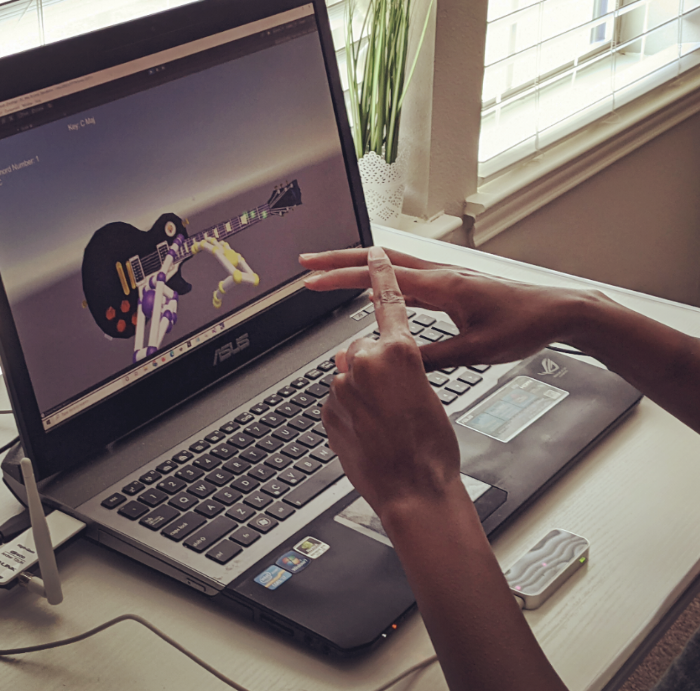
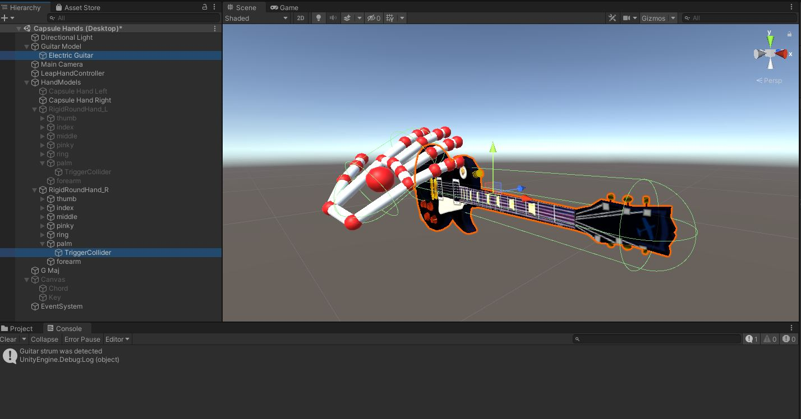
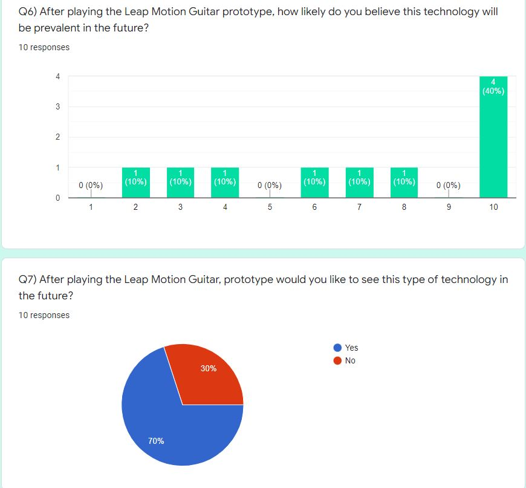

Since the 1950s, artists and composers have been experimenting with computing technology as a medium to create digital art and music. In recent years, technological advances in motion detection sensor hardware and software have reached new heights allowing for immersive interaction with virtual environments. This research paper will discuss the use of Ultraleap, Inc.'s hand tracking technology known as Leap Motion controller in order to give users an alternative and technologically innovative platform to create music. This paper covers previous research regarding digital music and virtual instruments, describes the development of a prototype virtual guitar, a project research experiment, and also discusses future feature enhancements and functional improvements of the Leap Motion Guitar prototype.
With the invention of the digital transistor and integrated circuits in the 20th century, traditional musical instruments evolved into novel, unprecedented formats capable of creating iconic sounds such as the digital synthesizer and the electronic guitar. Also in the late 20th century, there was much growth in the study of human motion in biometrics including the work of Dr. Tom Calvert, a leading technology professor in the study of computer science and kinesiology at that time. Dr Calvert created what was known as potentiometers that were computer sensors capable of tracking flexes and extensions of the human knee. Soon after this, the Massachusetts Institute of Technology developed an optical motion capture system that rendered an actor’s movements in two dimensions. In recent years, motion detection hardware sensors and software have become widely used in a large range of industries, especially the computer gaming industry where such devices are used to interact with objects within virtual environments.
This project builds upon multiple decades of this previous work and primarily focuses on the development of a virtual guitar system. The prototype uses the Unity game engine in order to provide interactive visual feedback and also utilizes an optical hand tracking hardware sensor called Ultraleap Leap Motion controller as the means of acquiring hand motion input. To create music, a musician just holds her hands above the Leap Motion controller which is placed directly in front of her computer keyboard. Her hand movements are visually reflected on the computer screen where she can provide chord numbers on the fingers of one hand while strumming the virtual guitar with her other hand. This research has a wide variety of practical uses such as in the education of music and music theory and may possibly one day replace the need for physical musical instruments in lieu of these new virtual forms.
The Leap Motion Guitar project demonstrates and explores gesture and motion-based digital music applications and their potential capabilities. The prototype also suggests a possible user interface design to create guitar music through hand motions and gestures. Because the controller is capable of sensing hand and finger motions as input analogous to a mouse, it requires no physical contact or touching. In addition to the Unity Game Engine itself, the only other software that was required was the Leap Motion Unity Plugin. The initial functionality of the prototype involves using basic finger gestures representing chord progression numbers on one hand while making strumming gestures on the other. To achieve this, the guitar model is capable of detecting strumming patterns when the Leap Motion hand models intersect a three dimensional capsule collider located on the model itself where the virtual strings are located. This trigger then initiates specific guitar chord audio which is determined by the chord number gestured by the left hand. The Leap Motion controller API provides C Sharp scripts capable of providing the left hand motion states of which fingers are extended and which are not.
The prototype focuses only on the musical key of C major. Because the majority of popular songs only utilize the first five chords in a key, this project only focuses on producing specific guitar chord audio from this subset of C major which are as follows:
Within the sample of 10 participants, 40% were female, 30% were male, 10% were non-binary, and the remaining 10% chose not to state their gender. The dominating age of the group was between 36 and 45 years of age and comprised 30% of the participant sample. 20% of the participants were between 18 and 25 years of age; 20% were between the ages of 26 and 35; 20% were under the age of 18; 10% were 45 or older. 20% of the participants had no musical experience, 30% had some to moderate experience, while 40% were very musically inclined. Only 10% of the participants were profes- sional musicians. Based on these percentages, the average skill level amongst the participant pool was 4.8. This means that the overall skill level was slightly less than moderate, with a standard deviation 3.341.
A vast amount of the participants could play the five chords created for this experiment; however, playing a song proved to be slightly more difficult. Some could see this type of technology being prevalent in the future, and a vast majority would enjoy seeing things like the Leap Motion Guitar prototype in the future.
The Leap Motion Guitar prototype allows musicians visual exposure and the ability to interact with a virtual guitar. The user is able to produce music without requiring the knowledge of how to truly play the instrument and in doing so, learns actual musical theory involving chord progression numbers. The user is also able to learn chord finger positions on a standard guitar tuning. Future additions to the prototype could include more advanced hand gestures more closely related to playing traditional guitar chords as well as possible gestures for advanced chords.
Since the experiment participants expressed difficulty with simple hand gestures, these features may be beyond the capabilities and data resolution output of the Leap Motion Controller device. I hope that the findings of this experiment will further other works that help those with disabilities or low socioeconomic status benefit from what music has to offer. Furthermore, I hope that the limitations of this experiment will influence more advocacy for this type of technology.
PDF LINK
Latex Source
Video [2]